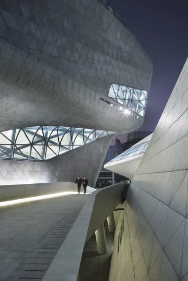
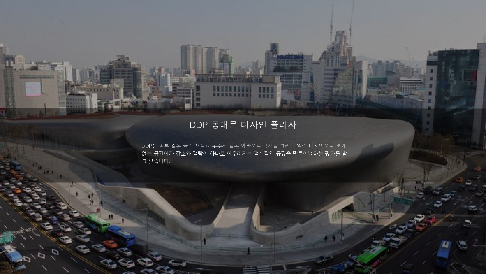
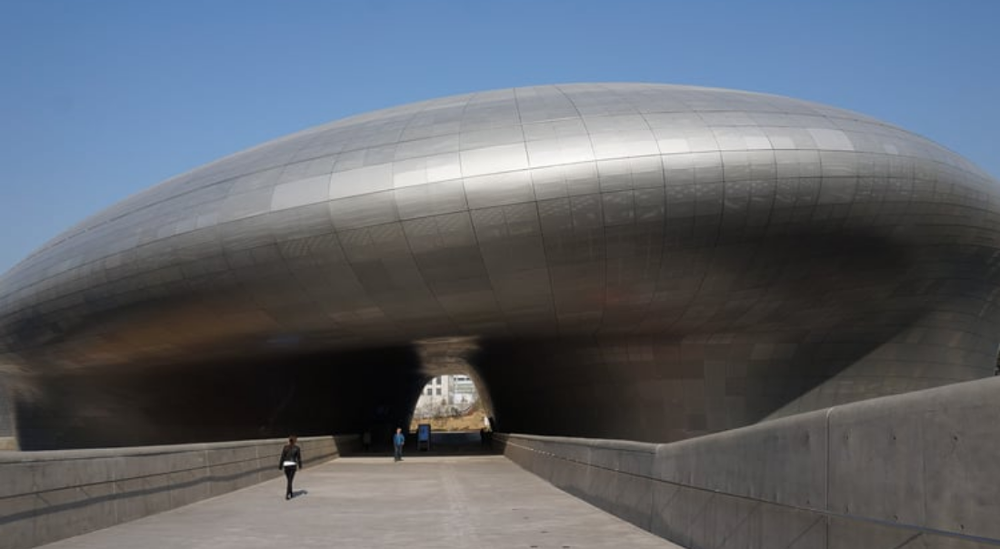

흐르는 듯한 곡선의 외관 디자인은 계곡이 변화하는 모습의 영향을 받아 자연경관과 건축, 자연 간의 매력적인 상호작용을 표현하였다고 하는데요. 멀리서 오페라하우스의 외관을 바라보고 있자면 개울 속에 있는 두 개의 조약돌을 떠오르게 합니다. 이 건물 내 1,800석 규모의 오디토리움은 최신 음향기술을 구비하였으며, 이보다 작은 400석의 다용도 홀은 공연과 오페라, 콘서트를 개최할 수 있고, 통로와 로비의 외벽을 통해 자연채광이 가능하도록 설계되었습니다.
광저우 오페라하우스의 들어가는 통로의 모습이나 미래지향적인 외관들은 마치 동대문에 있는 DDP를 떠올리게 합니다. 자칫 웅장한 규모로 차가워 보일 수 있는 건물에 부드러운 곡선을 이용하여 아름다움을 표현하고 벽과 바닥 그리고 천장의 경계를 허물어 바닥이 벽이 되고, 벽이 천장이 되는 등의 시선의 확장을 연출하여 자하 하디드의 건축적 특징을 반영한 모습입니다.
실내에 들어온 방문객들은 깔끔하고 유동적인 선과 질감으로 둘러싸인 후 다음 공간으로 가게 되는데요. 커다란 현관 홀에서 보면 삼각형 모양의 유리 판들로 구성된 창문은 낮에는 자연광을 유입시키고 밤에는 인접한 마천루와 타워의 네온 조명 빛을 유입 시켜주고 있습니다.

공연장 내부는 마치 물이 흐르는 것처럼 이음매 없는 표면을 연출하기 위해 유리섬유 보강 콘크리트로 마무리하였고 테두리 커팅 기술과 구식 건설방식을 모두 사용하여 건립하였는데 철, 유리, 콘크리트로 마감되었음에도 불구하고 오페라하우스의 주요 구조는 각기 다른 전통 주조 방식의 59개 철재 조인트가 필요한 금속 골조로 구성되어 있습니다. 건물의 뭉뚝하게 주름진 선은 오페라하우스 내에 있는 각 영역의 경계를 한정하는 것으로, 내외부의 동선이 되는 좁은 통로와 로비 및 카페 공간을 만들어주었고 공통점이 없는 서로 다른 층들을 부드럽게 연결해줍니다.

2007년에 한국의 동대문 운동장 터에 조성될 동대문 디자인 플라자(DDP)의 지명 초청 설계 경기에서 ‘환유의 풍경(Metonymic Landscape)’이라는 이름으로 뽑힌 건물로 '환유'는 말하고자 하는 것을 보여주는 대신 그것을 연상하게 하는 다른 대상을 통해 간접적을 묘사하는 방법입니다. 자하 하디드는 한국의 한옥 처마끝과 도자기의 곡선 등에서 많은 영감을 받아 작품을 구사하였고 쉴 새 없이 움직이는 동대문의 역동성을 액체가 흐르는 것처럼 공간적인 유연성과 변화하는 미래를 반영하였다고 합니다.
DDP가 일반 건축물과 가장 큰 차이점은 외관의 대부분을 차지하는 세계 최대 규모의 비정형 외장 패널이 아닐까 싶습니다. 외관의 대부분을 차지하고 있는 외장 패널은 45,133장의 규격 및 곡률, 크기가 전부 달라 외장 패널 공사를 정해진 비용과 공기 내에 성공적으로 구현하기 위해 선박, 항공기, 자동차 등 모든 금속 성형 분야의 기술들을 모아 세계 최초로 2차 곡면 성형 및 절단 장비를 제작하여 구성하였습니다.
독특한 외형만큼이나 내부 구조도 특별한 점을 가지고 있습니다. DDP 공사를 시작하기 전 땅을 고르는 과정에서 동대문운동장이 철거되었는데 이때 유적이 남게 되면서 현재 DDP는 그 시간까지 품어내 내부에 발굴된 유적을 전시하는 '야외유구전시장' 등 서울의 자랑스러운 역사가 함께하는 공간으로 조성되어 있습니다.
또한 전시장 자체가 박스 형태가 아니라 지형과 유기적인 결합의 형태를 보이며 내부에는 기둥 대신에 물 흐르듯 이어지는 유려한 곡선으로 만들기 위해 초대형 지붕트러스인 메가 트러스(Mega-Truss)와 스페이스 프레임(Space Frame)이 적용하였습니다.

동일한 모양이 하나도 없는 3차원 비정형 형태인 내부 마감공사도 일반적인 설계기법으로는 구현이 어려워 외장판넬 시공과 마찬가지로 최첨단 설계기법인 BIM(Building Information Modeling)을 도입하였고, 독특한 분위기를 연출하기 위해 건물 안과 외부에 다양한 모양의 비정형 노출 콘크리트를 배치하였습니다.
모호한 층간 구분은. 공원과 DDP를 매끄럽게 하나로 연결하며, 건축물과 자연 간 경계를 허물고 있어 도시의 자연과 역사, 현재를 잇는 징검다리 역할을 해줍니다.